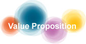
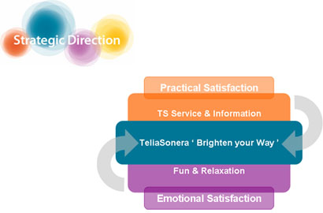
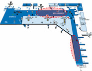
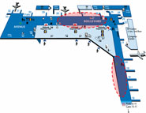
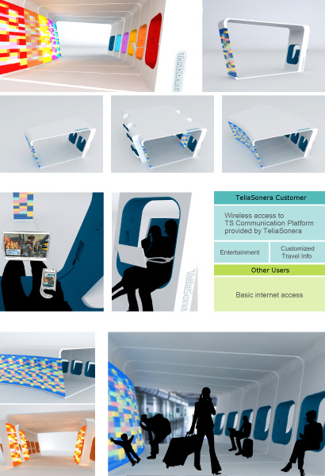

Brighten Your Way
Year: 2006Team: Bing Su, Mina Park, Shanfan Huang
Supervisor: Peter McGrory, Vesa Pekka Jääskö
Sponsor: TeliaSonera Finland
Invisible and intangible, the telecom network challenges its service providers to brand their market offer. As a reputable telecom network operator, TeliaSonera Finland intended to enhance its brand identity through experience design. Industrial Strategic Design department at TAIK was approached to provide a branding solution, targeting at customers in Helsinki-Vantaa airport.
Design Process
[+] Click to view process archive.
[-] Close
Delivery

for TeliaSonera:
+ Enhancing its brand perception by engaging user experience
+ Testing its new service/ technology with airport passengers
+ Testing its new service/ technology with airport passengers
for Airport Passengers:
+ Semi-private space for personal use
+ Public passage for walking by and browsing
+ Emotional and sensual pleasure
+ Information searching and mobile service trial
+ Public passage for walking by and browsing
+ Emotional and sensual pleasure
+ Information searching and mobile service trial

the Brand:
+ TeliaSonera regards simplicity as the key to long-term growth.
+ It maintains close cooperation with content providers to increase added value.
+ TeliaSonera regards simplicity as the key to long-term growth.
+ It maintains close cooperation with content providers to increase added value.
the User:
+ Business travelers who want privacy in the hectic terminal area to avoid interruption.
+ Passengers who need to rest and relax, or private space to work.
the Location:

+ There's no proper space for business travelers flying with economic class; all the business class lounges locate on 2nd floor.
+ To stand out, TS lounge should locate on the 1st floor.

+ There's no proper space for business travelers flying with economic class; all the business class lounges locate on 2nd floor.
+ To stand out, TS lounge should locate on the 1st floor.
the Product:
+ Modular unit equipped with Xenon light boxes
+ Five
color variations
+ Various assembling possibilities
the Service:
+ Display mobile TV and movie clip from cell phone to the big screen
+ Video call service
+ Wireless access to info/ entertainment service provided by TeliaSonera
+ Charge cell phone
+ Announce boarding time system
the User Experience:
+ Semi-private space
+ Public space
+ Emotional and sensual enjoyment
+ Practical usage
+ New mobile/digital product and service trial
